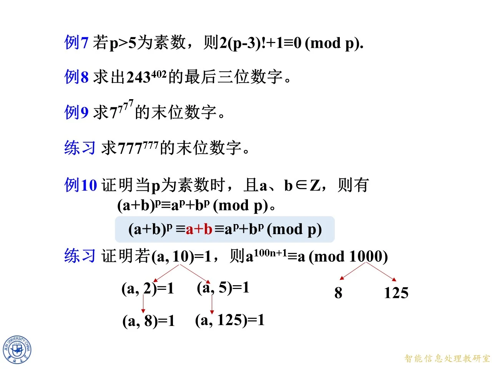
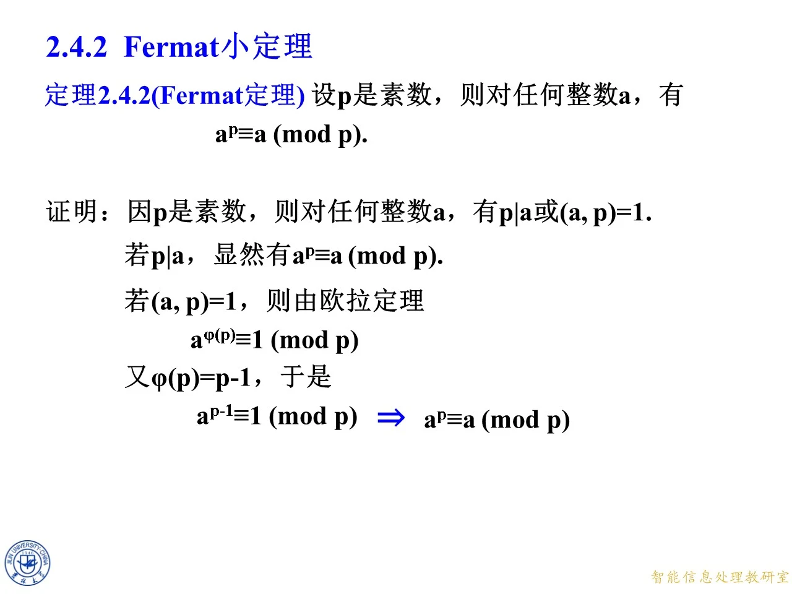
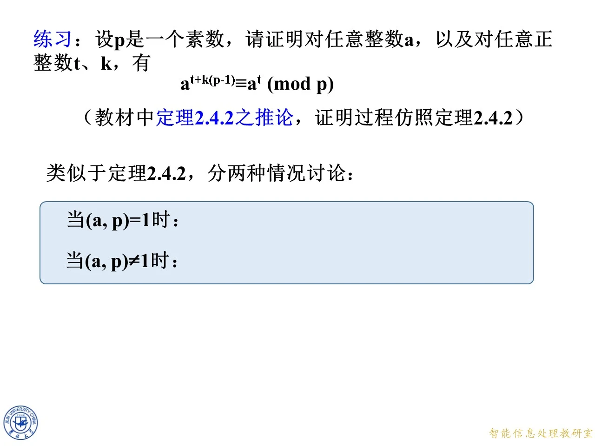

本主题讲 Fermat 小定理，即欧拉定理在素数模下的特殊形式，是第二章 2.4 节的核心内容之一。它上承 2.3 节的简化剩余系与欧拉定理，下启 Wilson 定理与 2.5 节的模重复平方计算法。课件先用一般证明建立定理，再用 RSA 密码体制中模 667 的具体例子展示它的威力，并处理了底数与模不互素时欧拉定理失效的补救办法，最后通过模 11 的阶乘思考题自然引出 Wilson 定理。

课件原图 · 9月18日授课 · 第 482 页 查看前后已收录原页 → 定理 2.4.2（Fermat 定理）
◆ p.438
定理 2.4.2（Fermat 定理）：设 p p p a a a
a p ≡ a ( m o d p ) . a^p\equiv a\pmod p. a p ≡ a ( mod p ) .
证明分两种情况，依据是：p p p a a a p ∣ a p\mid a p ∣ a ( a , p ) = 1 (a,p)=1 ( a , p ) = 1 p p p 1 1 1 p p p gcd ( a , p ) \gcd(a,p) g cd( a , p )
情况一：若 p ∣ a p\mid a p ∣ a a ≡ 0 ( m o d p ) a\equiv 0\pmod p a ≡ 0 ( mod p ) a p ≡ 0 ≡ a ( m o d p ) a^p\equiv 0\equiv a\pmod p a p ≡ 0 ≡ a ( mod p )
情况二：若 ( a , p ) = 1 (a,p)=1 ( a , p ) = 1 a φ ( p ) ≡ 1 ( m o d p ) a^{\varphi(p)}\equiv 1\pmod p a φ ( p ) ≡ 1 ( mod p ) p p p 1 , 2 , … , p − 1 1,2,\ldots,p-1 1 , 2 , … , p − 1 p p p φ ( p ) = p − 1 \varphi(p)=p-1 φ ( p ) = p − 1
a p − 1 ≡ 1 ( m o d p ) ⟹ a p ≡ a ( m o d p ) , a^{p-1}\equiv 1\pmod p\ \Longrightarrow\ a^p\equiv a\pmod p, a p − 1 ≡ 1 ( mod p ) ⟹ a p ≡ a ( mod p ) ,
最后一步是在 a p − 1 ≡ 1 a^{p-1}\equiv 1 a p − 1 ≡ 1 a a a
拓展 （课件外补充）：a p ≡ a ( m o d p ) a^p\equiv a\pmod p a p ≡ a ( mod p ) a a a p p p a p − 1 ≡ 1 ( m o d p ) a^{p-1}\equiv 1\pmod p a p − 1 ≡ 1 ( mod p ) p ∤ a p\nmid a p ∤ a a a a p ∤ a p\nmid a p ∤ a a p − 1 ≡ 1 a^{p-1}\equiv 1 a p − 1 ≡ 1 a a a p ∤ a p\nmid a p ∤ a a a a a a a

课件原图 · 9月18日授课 · 第 438 页 查看前后已收录原页 → RSA 情景：欧拉定理保证 a 15 × 575 ≡ a ( m o d 667 ) a^{15\times 575}\equiv a\pmod{667} a 15 × 575 ≡ a ( mod 667 )
◆ p.439
本页用具体数字搭起一条推理链，模拟 RSA 解密的原理。设模 m = 667 = 23 × 29 m=667=23\times 29 m = 667 = 23 × 29
φ ( 667 ) = φ ( 23 ) φ ( 29 ) = 22 × 28 = 616. \varphi(667)=\varphi(23)\varphi(29)=22\times 28=616. φ ( 667 ) = φ ( 23 ) φ ( 29 ) = 22 × 28 = 616.
推理链自下而上：
若 ( a , 667 ) = 1 (a,667)=1 ( a , 667 ) = 1 a 616 ≡ 1 ( m o d 667 ) a^{616}\equiv 1\pmod{667} a 616 ≡ 1 ( mod 667 )
两边取 14 14 14 ( a 616 ) 14 = a 14 × 616 ≡ 1 ( m o d 667 ) (a^{616})^{14}=a^{14\times 616}\equiv 1\pmod{667} ( a 616 ) 14 = a 14 × 616 ≡ 1 ( mod 667 )
两边同乘 a a a a 14 × 616 + 1 ≡ a ( m o d 667 ) a^{14\times 616+1}\equiv a\pmod{667} a 14 × 616 + 1 ≡ a ( mod 667 )
又因为 15 × 575 − 14 × 616 = 8625 − 8624 = 1 15\times 575-14\times 616=8625-8624=1 15 × 575 − 14 × 616 = 8625 − 8624 = 1 14 × 616 + 1 = 8625 = 15 × 575 14\times 616+1=8625=15\times 575 14 × 616 + 1 = 8625 = 15 × 575
a 15 × 575 ≡ a ( m o d 667 ) . a^{15\times 575}\equiv a\pmod{667}. a 15 × 575 ≡ a ( mod 667 ) .
这正是 RSA 的解密原理：加密时计算 a a a k φ ( m ) + 1 k\varphi(m)+1 k φ ( m ) + 1 a a a
◆ p.440
本页与上一页几乎相同，但把条件改成了 ( a , 667 ) ≠ 1 (a,667)\neq 1 ( a , 667 ) = 1 a a a 23 23 23 29 29 29 a 616 ≡ 1 ( m o d 667 ) a^{616}\equiv 1\pmod{667} a 616 ≡ 1 ( mod 667 ) a 14 × 616 + 1 ≡ a ( m o d 667 ) a^{14\times 616+1}\equiv a\pmod{667} a 14 × 616 + 1 ≡ a ( mod 667 )
拓展 （课件外补充）：这一页是整个例子最值得体会的地方——定理的使用条件不是摆设。RSA 实际使用中明文 a a a p p p q q q
不互素时的补救：以 a = 23 a=23 a = 23
◆ p.441
本页把链条截短：当 ( a , 667 ) ≠ 1 (a,667)\neq 1 ( a , 667 ) = 1 ( a , 667 ) = 1 ⇒ a 616 ≡ 1 (a,667)=1\Rightarrow a^{616}\equiv 1 ( a , 667 ) = 1 ⇒ a 616 ≡ 1 a 14 × 616 + 1 ≡ a ( m o d 667 ) a^{14\times 616+1}\equiv a\pmod{667} a 14 × 616 + 1 ≡ a ( mod 667 )
◆ p.442-443
取最极端的例子 a = 23 a=23 a = 23
23 14 × 616 + 1 ≡ 23 ( m o d 667 ) ? 23^{14\times 616+1}\equiv 23\pmod{667}\ ? 2 3 14 × 616 + 1 ≡ 23 ( mod 667 ) ?
页面上打了个问号：23 与 667 不互素，欧拉定理用不上，怎么办？
◆ p.444-446
思路是拆开模数：667 = 23 × 29 667=23\times 29 667 = 23 × 29 23 23 23 29 29 29
23 14 × 616 + 1 ≡ 23 ( m o d 23 ) , 23 14 × 616 + 1 ≡ 23 ( m o d 29 ) , 23^{14\times 616+1}\equiv 23\pmod{23},\qquad 23^{14\times 616+1}\equiv 23\pmod{29}, 2 3 14 × 616 + 1 ≡ 23 ( mod 23 ) , 2 3 14 × 616 + 1 ≡ 23 ( mod 29 ) ,
再合并即可。第一条是平凡的：左边底数含因子 23，指数 14 × 616 + 1 ≥ 1 14\times 616+1\ge 1 14 × 616 + 1 ≥ 1 23 ∣ 23 14 × 616 + 1 23\mid 23^{14\times 616+1} 23 ∣ 2 3 14 × 616 + 1 ( 23 , 29 ) = 1 (23,29)=1 ( 23 , 29 ) = 1 φ ( 29 ) = 28 \varphi(29)=28 φ ( 29 ) = 28 616 = 22 × 28 616=22\times 28 616 = 22 × 28
23 616 = ( 23 28 ) 22 ≡ 1 22 = 1 ( m o d 29 ) ⟹ 23 14 × 616 + 1 = ( 23 616 ) 14 ⋅ 23 ≡ 23 ( m o d 29 ) . 23^{616}=(23^{28})^{22}\equiv 1^{22}=1\pmod{29}\ \Longrightarrow\ 23^{14\times 616+1}=(23^{616})^{14}\cdot 23\equiv 23\pmod{29}. 2 3 616 = ( 2 3 28 ) 22 ≡ 1 22 = 1 ( mod 29 ) ⟹ 2 3 14 × 616 + 1 = ( 2 3 616 ) 14 ⋅ 23 ≡ 23 ( mod 29 ) .
课件在第二条旁标注了"Euler 定理"。
◆ p.447-448
现在 23 14 × 616 + 1 − 23 23^{14\times 616+1}-23 2 3 14 × 616 + 1 − 23 23 23 23 29 29 29 ( 23 , 29 ) = 1 (23,29)=1 ( 23 , 29 ) = 1 23 × 29 = 667 ∣ 23 14 × 616 + 1 − 23 23\times 29=667\mid 23^{14\times 616+1}-23 23 × 29 = 667 ∣ 2 3 14 × 616 + 1 − 23
23 14 × 616 + 1 ≡ 23 ( m o d 667 ) , 23^{14\times 616+1}\equiv 23\pmod{667}, 2 3 14 × 616 + 1 ≡ 23 ( mod 667 ) ,
问号消除，结论成立。同理可验证 a = 29 a=29 a = 29
拓展 （课件外补充）：这个论证可以推广成一般结论——对 m = p q m=pq m = pq p , q p,q p , q a a a a k φ ( m ) + 1 ≡ a ( m o d m ) a^{k\varphi(m)+1}\equiv a\pmod m a k φ ( m ) + 1 ≡ a ( mod m ) a a a p p p q q q p p p q q q m 1 m 2 m_1m_2 m 1 m 2
一般情形与实际应用的注意点
◆ p.449-450
把 a = 23 a=23 a = 23 a a a ( a , 667 ) ≠ 1 (a,667)\neq 1 ( a , 667 ) = 1 a 14 × 616 + 1 ≡ a ( m o d 667 ) a^{14\times 616+1}\equiv a\pmod{667} a 14 × 616 + 1 ≡ a ( mod 667 ) a a a a 15 × 575 ≡ a ( m o d 667 ) a^{15\times 575}\equiv a\pmod{667} a 15 × 575 ≡ a ( mod 667 )
页面上还有一个重要的红字提醒：如果 a ≥ 667 a\ge 667 a ≥ 667 a 15 × 575 m o d 667 a^{15\times 575}\bmod 667 a 15 × 575 mod 667 a m o d 667 a\bmod 667 a mod 667 a a a a < m a<m a < m m m m m m m p p p q q q m m m
拓展 （课件外补充）：这段提醒对应密码学里的两个实操要求：一是明文必须在模数范围内编码（否则解密只恢复出 a m o d m a\bmod m a mod m m = p q m=pq m = pq p , q p,q p , q φ ( m ) \varphi(m) φ ( m )
练习：Fermat 小定理的指数推论
◆ p.451-452
练习：设 p p p a a a t t t k k k
a t + k ( p − 1 ) ≡ a t ( m o d p ) . a^{t+k(p-1)}\equiv a^t\pmod p. a t + k ( p − 1 ) ≡ a t ( mod p ) .
这是教材中定理 2.4.2 之推论，证明过程仿照定理 2.4.2，分两种情况讨论。
证明 （课件给出框架，过程补全如下）：
当 ( a , p ) = 1 (a,p)=1 ( a , p ) = 1 a p − 1 ≡ 1 ( m o d p ) a^{p-1}\equiv 1\pmod p a p − 1 ≡ 1 ( mod p ) φ ( p ) = p − 1 \varphi(p)=p-1 φ ( p ) = p − 1
a t + k ( p − 1 ) = a t ⋅ ( a p − 1 ) k ≡ a t ⋅ 1 k = a t ( m o d p ) . a^{t+k(p-1)}=a^t\cdot\left(a^{p-1}\right)^k\equiv a^t\cdot 1^k=a^t\pmod p. a t + k ( p − 1 ) = a t ⋅ ( a p − 1 ) k ≡ a t ⋅ 1 k = a t ( mod p ) .
当 ( a , p ) ≠ 1 (a,p)\neq 1 ( a , p ) = 1 p ∣ a p\mid a p ∣ a p ∣ a t p\mid a^t p ∣ a t p ∣ a t + k ( p − 1 ) p\mid a^{t+k(p-1)} p ∣ a t + k ( p − 1 ) t t t t + k ( p − 1 ) t+k(p-1) t + k ( p − 1 ) t ≥ 1 t\ge 1 t ≥ 1 0 0 0 a t + k ( p − 1 ) ≡ 0 ≡ a t ( m o d p ) a^{t+k(p-1)}\equiv 0\equiv a^t\pmod p a t + k ( p − 1 ) ≡ 0 ≡ a t ( mod p )
两种情况合并，结论对任意整数 a a a
拓展 （课件外补充）：条件"t t t t = 0 t=0 t = 0 t = 0 t=0 t = 0 p ∣ a p\mid a p ∣ a a k ( p − 1 ) ≡ 0 a^{k(p-1)}\equiv 0 a k ( p − 1 ) ≡ 0 a 0 = 1 a^0=1 a 0 = 1 0 ≢ 1 ( m o d p ) 0\not\equiv 1\pmod p 0 ≡ 1 ( mod p ) t > 0 t>0 t > 0 p − 1 p-1 p − 1

课件原图 · 9月18日授课 · 第 452 页 查看前后已收录原页 → 回顾例 1：用简化剩余系证明 3 10 ≡ 1 ( m o d 11 ) 3^{10}\equiv 1\pmod{11} 3 10 ≡ 1 ( mod 11 )
◆ p.453-454
回顾例 1：设 m = 11 m=11 m = 11 a = 3 a=3 a = 3 ( 3 , 11 ) = 1 (3,11)=1 ( 3 , 11 ) = 1 φ ( 11 ) = 10 \varphi(11)=10 φ ( 11 ) = 10
1 , 2 , 3 , 4 , 5 , 6 , 7 , 8 , 9 , 10. 1,\ 2,\ 3,\ 4,\ 5,\ 6,\ 7,\ 8,\ 9,\ 10. 1 , 2 , 3 , 4 , 5 , 6 , 7 , 8 , 9 , 10.
每一项都乘上 3 后取模 11 的最小非负剩余：
3 ⋅ 1 , 3 ⋅ 2 , 3 ⋅ 3 , … , 3 ⋅ 10 ≡ 3 , 6 , 9 , 1 , 4 , 7 , 10 , 2 , 5 , 8 ( m o d 11 ) , 3\cdot 1,\ 3\cdot 2,\ 3\cdot 3,\ \ldots,\ 3\cdot 10\equiv 3,\ 6,\ 9,\ 1,\ 4,\ 7,\ 10,\ 2,\ 5,\ 8\pmod{11}, 3 ⋅ 1 , 3 ⋅ 2 , 3 ⋅ 3 , … , 3 ⋅ 10 ≡ 3 , 6 , 9 , 1 , 4 , 7 , 10 , 2 , 5 , 8 ( mod 11 ) ,
这十个余数恰好又是 1 1 1 10 10 10
( 3 ⋅ 1 ) ( 3 ⋅ 2 ) ( 3 ⋅ 3 ) … ( 3 ⋅ 9 ) ( 3 ⋅ 10 ) ≡ 3 ⋅ 6 ⋅ 9 ⋅ … ⋅ 5 ⋅ 8 ( m o d 11 ) , (3\cdot 1)(3\cdot 2)(3\cdot 3)\ldots(3\cdot 9)(3\cdot 10)\equiv 3\cdot 6\cdot 9\cdot \ldots\cdot 5\cdot 8\pmod{11}, ( 3 ⋅ 1 ) ( 3 ⋅ 2 ) ( 3 ⋅ 3 ) … ( 3 ⋅ 9 ) ( 3 ⋅ 10 ) ≡ 3 ⋅ 6 ⋅ 9 ⋅ … ⋅ 5 ⋅ 8 ( mod 11 ) ,
左边提出公因子 3 10 3^{10} 3 10 1 ⋅ 2 ⋅ 3 ⋅ … ⋅ 9 ⋅ 10 1\cdot 2\cdot 3\cdot\ldots\cdot 9\cdot 10 1 ⋅ 2 ⋅ 3 ⋅ … ⋅ 9 ⋅ 10
3 10 ( 1 ⋅ 2 ⋅ 3 ⋅ … ⋅ 9 ⋅ 10 ) ≡ 1 ⋅ 2 ⋅ 3 ⋅ … ⋅ 9 ⋅ 10 ( m o d 11 ) . 3^{10}\,(1\cdot 2\cdot 3\cdot\ldots\cdot 9\cdot 10)\equiv 1\cdot 2\cdot 3\cdot\ldots\cdot 9\cdot 10\pmod{11}. 3 10 ( 1 ⋅ 2 ⋅ 3 ⋅ … ⋅ 9 ⋅ 10 ) ≡ 1 ⋅ 2 ⋅ 3 ⋅ … ⋅ 9 ⋅ 10 ( mod 11 ) .
由于 1 ⋅ 2 ⋅ … ⋅ 10 1\cdot 2\cdot\ldots\cdot 10 1 ⋅ 2 ⋅ … ⋅ 10
3 10 ≡ 1 ( m o d 11 ) . 3^{10}\equiv 1\pmod{11}. 3 10 ≡ 1 ( mod 11 ) .
这就是欧拉定理在 m = 11 m=11 m = 11 3 10 = 3 11 − 1 3^{10}=3^{11-1} 3 10 = 3 11 − 1
页末提出思考题：1 ⋅ 2 ⋅ 3 ⋅ … ⋅ 9 ⋅ 10 ≡ ? ( m o d 11 ) 1\cdot 2\cdot 3\cdot\ldots\cdot 9\cdot 10\equiv\ ?\pmod{11} 1 ⋅ 2 ⋅ 3 ⋅ … ⋅ 9 ⋅ 10 ≡ ? ( mod 11 )
思考：1 ⋅ 2 ⋅ … ⋅ 10 ( m o d 11 ) 1\cdot 2\cdot\ldots\cdot 10\pmod{11} 1 ⋅ 2 ⋅ … ⋅ 10 ( mod 11 )
◆ p.455-456
承接上一页的思考题：1 ⋅ 2 ⋅ 3 ⋅ … ⋅ 9 ⋅ 10 ≡ ? ( m o d 11 ) 1\cdot 2\cdot 3\cdot\ldots\cdot 9\cdot 10\equiv\ ?\pmod{11} 1 ⋅ 2 ⋅ 3 ⋅ … ⋅ 9 ⋅ 10 ≡ ? ( mod 11 )
第一步转化：把最后一个因数 10 10 10 − 1 -1 − 1 10 ≡ − 1 ( m o d 11 ) 10\equiv -1\pmod{11} 10 ≡ − 1 ( mod 11 )
1 ⋅ 2 ⋅ 3 ⋅ 4 ⋅ 5 ⋅ 6 ⋅ 7 ⋅ 8 ⋅ 9 ⋅ ( − 1 ) ( m o d 11 ) . 1\cdot 2\cdot 3\cdot 4\cdot 5\cdot 6\cdot 7\cdot 8\cdot 9\cdot(-1)\pmod{11}. 1 ⋅ 2 ⋅ 3 ⋅ 4 ⋅ 5 ⋅ 6 ⋅ 7 ⋅ 8 ⋅ 9 ⋅ ( − 1 ) ( mod 11 ) .
页面上把 1 1 1 9 9 9
◆ p.457
课件在 2 2 2 6 6 6 2 × 6 = 12 ≡ 1 ( m o d 11 ) 2\times 6=12\equiv 1\pmod{11} 2 × 6 = 12 ≡ 1 ( mod 11 )
◆ p.458
在 3 3 3 4 4 4 3 × 4 = 12 ≡ 1 ( m o d 11 ) 3\times 4=12\equiv 1\pmod{11} 3 × 4 = 12 ≡ 1 ( mod 11 )
◆ p.459
在 5 5 5 9 9 9 5 × 9 = 45 = 4 × 11 + 1 ≡ 1 ( m o d 11 ) 5\times 9=45=4\times 11+1\equiv 1\pmod{11} 5 × 9 = 45 = 4 × 11 + 1 ≡ 1 ( mod 11 )
◆ p.460
在 7 7 7 8 8 8 7 × 8 = 56 = 5 × 11 + 1 ≡ 1 ( m o d 11 ) 7\times 8=56=5\times 11+1\equiv 1\pmod{11} 7 × 8 = 56 = 5 × 11 + 1 ≡ 1 ( mod 11 )
◆ p.461-464
至此 1 1 1 9 9 9 ( 2 , 6 ) (2,6) ( 2 , 6 ) ( 3 , 4 ) (3,4) ( 3 , 4 ) ( 5 , 9 ) (5,9) ( 5 , 9 ) ( 7 , 8 ) (7,8) ( 7 , 8 ) 1 1 1 1 1 1 1 1 1 10 10 10 − 1 -1 − 1
1 ⋅ 2 ⋅ 3 ⋅ 4 ⋅ 5 ⋅ 6 ⋅ 7 ⋅ 8 ⋅ 9 ⋅ 10 ≡ 1 ⋅ 2 ⋅ 3 ⋅ 4 ⋅ 5 ⋅ 6 ⋅ 7 ⋅ 8 ⋅ 9 ⋅ ( − 1 ) ( m o d 11 ) 1\cdot 2\cdot 3\cdot 4\cdot 5\cdot 6\cdot 7\cdot 8\cdot 9\cdot 10\equiv 1\cdot 2\cdot 3\cdot 4\cdot 5\cdot 6\cdot 7\cdot 8\cdot 9\cdot(-1)\pmod{11} 1 ⋅ 2 ⋅ 3 ⋅ 4 ⋅ 5 ⋅ 6 ⋅ 7 ⋅ 8 ⋅ 9 ⋅ 10 ≡ 1 ⋅ 2 ⋅ 3 ⋅ 4 ⋅ 5 ⋅ 6 ⋅ 7 ⋅ 8 ⋅ 9 ⋅ ( − 1 ) ( mod 11 )
≡ 1 ⋅ ( 2 ⋅ 6 ) ⋅ ( 3 ⋅ 4 ) ⋅ ( 5 ⋅ 9 ) ⋅ ( 7 ⋅ 8 ) ⋅ ( − 1 ) ≡ 1 ⋅ 1 ⋅ 1 ⋅ 1 ⋅ 1 ⋅ ( − 1 ) = − 1 ( m o d 11 ) . \equiv 1\cdot(2\cdot 6)\cdot(3\cdot 4)\cdot(5\cdot 9)\cdot(7\cdot 8)\cdot(-1)\equiv 1\cdot 1\cdot 1\cdot 1\cdot 1\cdot(-1)=-1\pmod{11}. ≡ 1 ⋅ ( 2 ⋅ 6 ) ⋅ ( 3 ⋅ 4 ) ⋅ ( 5 ⋅ 9 ) ⋅ ( 7 ⋅ 8 ) ⋅ ( − 1 ) ≡ 1 ⋅ 1 ⋅ 1 ⋅ 1 ⋅ 1 ⋅ ( − 1 ) = − 1 ( mod 11 ) .
所以
10 ! ≡ − 1 ( m o d 11 ) . 10!\equiv -1\pmod{11}. 10 ! ≡ − 1 ( mod 11 ) .
拓展 （课件外补充）：这就是 Wilson 定理的特例。Wilson 定理说：p p p ( p − 1 ) ! ≡ − 1 ( m o d p ) (p-1)!\equiv -1\pmod p ( p − 1 )! ≡ − 1 ( mod p ) p p p 1 1 1 p − 1 p-1 p − 1 1 1 1 p − 1 ≡ − 1 p-1\equiv -1 p − 1 ≡ − 1 x 2 ≡ 1 ( m o d p ) x^2\equiv 1\pmod p x 2 ≡ 1 ( mod p ) x ≡ ± 1 x\equiv\pm 1 x ≡ ± 1 1 1 1 ( p − 1 ) ! ≡ − 1 ( m o d p ) (p-1)!\equiv -1\pmod p ( p − 1 )! ≡ − 1 ( mod p )
9 月 23 日授课：同一课件的重复讲授（p.79-82）
◆ p.79
本页与 p.438 完全相同：定理 2.4.2（Fermat 定理）及其完整证明（p ∣ a p\mid a p ∣ a ( a , p ) = 1 (a,p)=1 ( a , p ) = 1
◆ p.80
本页与 p.439 完全相同：RSA 情景中 m = 667 m=667 m = 667 φ ( 667 ) = 616 \varphi(667)=616 φ ( 667 ) = 616
◆ p.81
本页与 p.440 完全相同：( a , 667 ) ≠ 1 (a,667)\neq 1 ( a , 667 ) = 1
◆ p.82
本页与 p.441 完全相同：不互素时链条截短、目标悬空的过渡页，见前文。
◆ p.83-84
本页与 p.442-443 相同：取 a = 23 a=23 a = 23 23 14 × 616 + 1 ≡ 23 ( m o d 667 ) 23^{14\times 616+1}\equiv 23\pmod{667} 2 3 14 × 616 + 1 ≡ 23 ( mod 667 )
◆ p.85-87
本页与 p.444-446 相同：拆模 667 = 23 × 29 667=23\times 29 667 = 23 × 29
◆ p.88
本页与 p.447 相同：两条同余合并——模 23 与模 29 互素，故结论对模 667 成立，见前文。
◆ p.89
本页与 p.448 相同：绿色高亮最终结论 23 14 × 616 + 1 ≡ 23 ( m o d 667 ) 23^{14\times 616+1}\equiv 23\pmod{667} 2 3 14 × 616 + 1 ≡ 23 ( mod 667 )
◆ p.90-91
本页与 p.449-450 相同：一般 a a a a ≥ 667 a\ge 667 a ≥ 667 m m m
◆ p.92-93
本页与 p.451-452 相同：练习"对任意整数 a a a t t t k k k a t + k ( p − 1 ) ≡ a t ( m o d p ) a^{t+k(p-1)}\equiv a^t\pmod p a t + k ( p − 1 ) ≡ a t ( mod p )
◆ p.94-95
本页与 p.453-454 相同：回顾例 1（m = 11 m=11 m = 11 a = 3 a=3 a = 3 3 10 ≡ 1 ( m o d 11 ) 3^{10}\equiv 1\pmod{11} 3 10 ≡ 1 ( mod 11 ) 10 ! ≡ ? ( m o d 11 ) 10!\equiv\ ?\pmod{11} 10 ! ≡ ? ( mod 11 )
◆ p.96-97
本页与 p.455-456 相同：思考题起步，把 10 10 10 − 1 -1 − 1 1 ⋅ 2 ⋅ … ⋅ 10 ( m o d 11 ) 1\cdot 2\cdot\ldots\cdot 10\pmod{11} 1 ⋅ 2 ⋅ … ⋅ 10 ( mod 11 )
◆ p.98-99
本页与 p.457-458 相同：连出前两对互逆数 ( 2 , 6 ) (2,6) ( 2 , 6 ) ( 3 , 4 ) (3,4) ( 3 , 4 )
◆ p.100
本页与 p.459 相同：连出第三对互逆数 ( 5 , 9 ) (5,9) ( 5 , 9 )
◆ p.101
本页与 p.460 相同：连出第四对互逆数 ( 7 , 8 ) (7,8) ( 7 , 8 )
◆ p.102-105
本页与 p.461-464 相同：完整写出 10 ! ≡ 1 ⋅ ( 2 ⋅ 6 ) ⋅ ( 3 ⋅ 4 ) ⋅ ( 5 ⋅ 9 ) ⋅ ( 7 ⋅ 8 ) ⋅ ( − 1 ) ≡ − 1 ( m o d 11 ) 10!\equiv 1\cdot(2\cdot 6)\cdot(3\cdot 4)\cdot(5\cdot 9)\cdot(7\cdot 8)\cdot(-1)\equiv -1\pmod{11} 10 ! ≡ 1 ⋅ ( 2 ⋅ 6 ) ⋅ ( 3 ⋅ 4 ) ⋅ ( 5 ⋅ 9 ) ⋅ ( 7 ⋅ 8 ) ⋅ ( − 1 ) ≡ − 1 ( mod 11 )